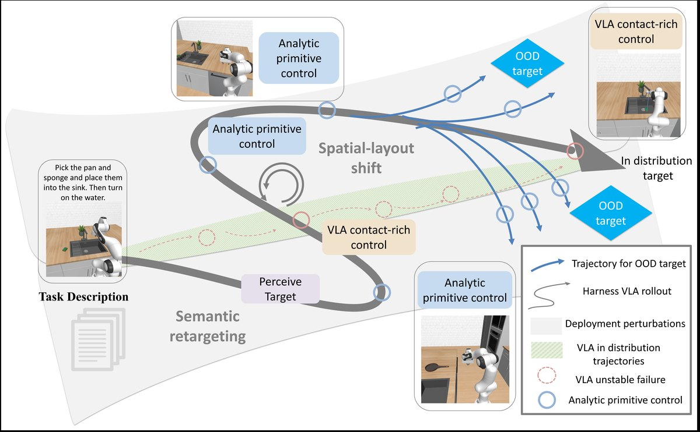
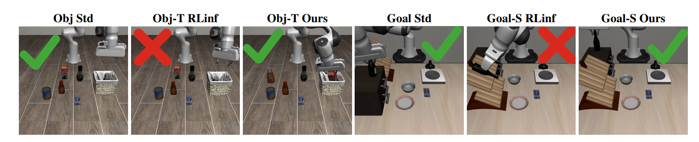
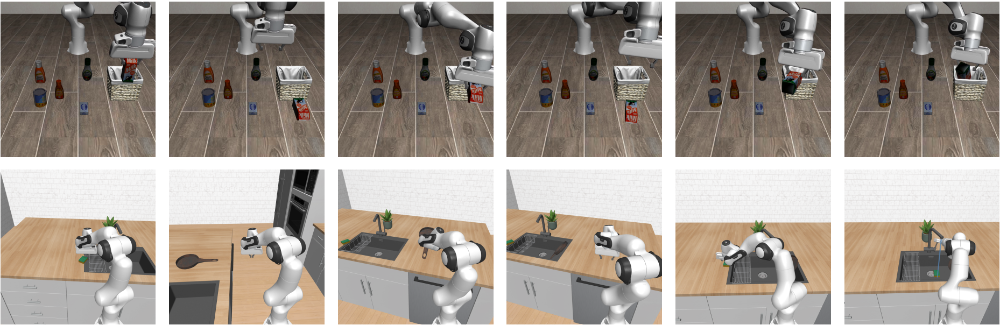
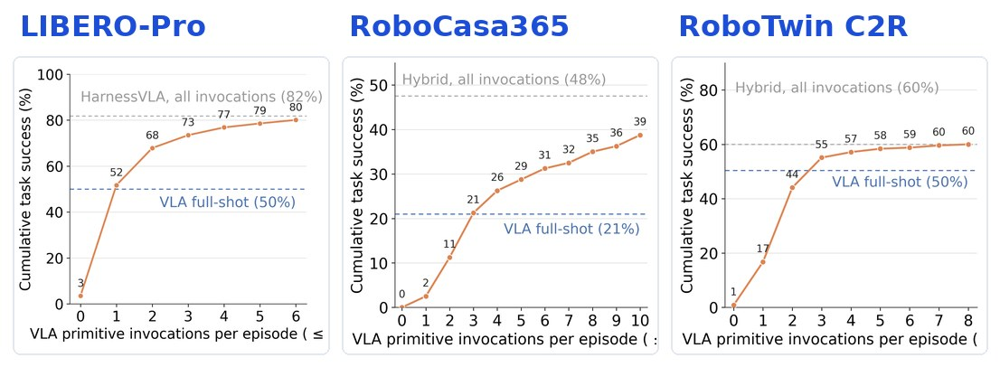
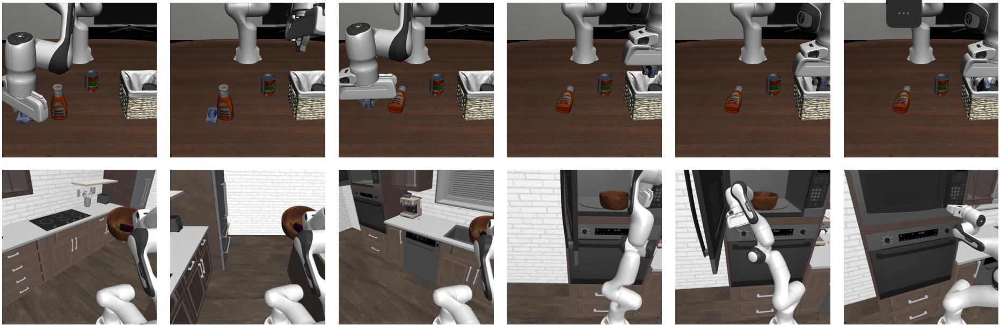
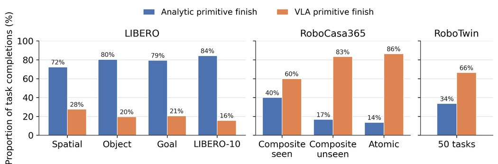

Frozen VLA + Simple Primitives，就能做强泛化机器人操作？Harness VLA 给出新答案
如果一个机器人已经学会了抓取、放置、开抽屉、按按钮、操作水龙头，它是不是就能稳定完成各种自然语言指令？
过去两年，Vision-Language-Action Models，也就是 VLA，给了机器人学习领域一个很强的想象：直接把图像、语言和动作连起来，让模型从大规模机器人轨迹里学会操作。很多 VLA 在训练分布内已经表现得相当不错。它们能抓住物体，能把东西放进容器，也能完成一些接触丰富的动作。
但一到真实部署，问题很快出现。
目标物体换了位置，VLA 可能还会朝训练时熟悉的区域移动；任务语义被重定向，它可能仍然重复原来的行为；一个短技能本来能做，但需要和其它技能组合成长程任务时，整条 rollout 就开始变得不稳定。更麻烦的是，VLA 经常被当成一个端到端策略来使用：它不仅要负责接触控制，还要理解语言、绑定目标、处理空间变化、规划长程流程，甚至处理执行中的局部不稳定。
这其实是在让一个模型承担太多事情。
清华于超老师团队提出的 Harness VLA 想讲一个不同的故事：
VLA 不是不强，而是没被用对。
Harness VLA 不训练一个新的 VLA，也不在部署时扩展一个越来越大的技能库。它把 frozen VLA 放进一个 memory-guided agentic harness 里，让 Codex / Claude Code 这样的 agent 学会如何使用 VLA：什么时候调用它，调用前如何调整机器人位姿和观察上下文，哪些阶段交给简单解析控制原语，如何把成功探索抽象成可复用的 Task Specific Memory。
这套思路可以概括成两句话：
Harness VLA 把 frozen VLA 从端到端策略，变成了一个可调度、可观察、可组合的 contact-rich primitive。
simple primitives + frozen VLA + memory-guided agent = strong OOD generalization。

图 1：Harness VLA 的整体框架。规划器基于任务、RGB-D 观测、本体感知和 memory，向固定 primitive library 发出结构化调用，组合 VLA primitive 与 analytic primitives。
上图展示了 Harness VLA 的核心思想：planner 不直接输出底层动作，而是在任务语言、RGB-D 观察、proprioception、Task Specific Memory 和 Global Memory 的条件下，调用一个固定 primitive library。VLA primitive 负责接触丰富的局部执行，analytic primitives 负责确定性移动、姿态、夹爪、导航和释放等非接触结构。
项目资源
- 论文链接：即将更新
- 项目主页：即将更新
- GitHub：即将更新
- Demo Video：即将更新
- arXiv / OpenReview：即将更新
- Hugging Face / Model / Data：即将更新
01. VLA 不是不强，而是被要求做太多
VLA 的强项非常明确：局部、视觉条件下的 contact-rich control。
抓取一个不规则物体，把物体放进一个容器，操作一个铰接物体，按按钮，打开门或抽屉，这些动作往往很难用纯手写控制器稳定实现。解析控制器可以规划一条路径，可以移动到一个三维点，可以打开夹爪，但真正接触那一刻，物体形状、摩擦、遮挡、姿态误差都会让规则方法变得脆弱。
这正是 VLA 擅长的地方。它从轨迹数据里学到局部视觉和动作之间的对应关系，因此在训练分布附近，VLA 往往能给出很强的操作能力。
但 VLA 的弱点也同样明显：当任务离开训练轨迹分布，它很容易出问题。
比如：
- instruction redirection：语言指令把目标换成了另一个物体；
- goal re-binding：目标谓词或目标区域发生变化；
- spatial-layout shift：物体位置被交换或重新布局；
- long-horizon composition：多个短技能需要组合成更长任务；
- mobile 或 bimanual setting：需要 base staging、双臂协同或更复杂的空间准备。
在这些场景下，端到端 VLA 经常会暴露一个问题：它可能学会了“熟悉轨迹”，但没有稳健地学会“当前任务绑定”。
这说明一个关键问题：
VLA 的 contact skill 很强，但不应该让它独自承担语言理解、目标绑定、空间重定位和长程组合。
Harness VLA 的出发点就是重新分工。
02. Harness VLA 如何重新分工
Harness VLA 的做法不是重新训练 VLA，而是把 frozen VLA 包进一个 agentic manipulation loop。
在这个系统里，所有动作都通过一个固定 primitive library 发出。planner 不能随便发明新技能，也不能直接输出低层 torques 或 action chunks。它只能根据当前观察、任务语言和 memory，选择一个 primitive，并用 JSON 格式传入参数。
这个 primitive library 包括两类东西。
第一类是 simple analytic primitives，例如：
MOVE TO：把末端移动到一个世界坐标目标；MOVE POSE：同时调整位置和姿态；ROTATE WRIST/ROTATE PITCH：调整腕部角度；SET GRIPPER：打开或关闭夹爪；RELEASE：释放物体；NAVIGATE TO/MOVE BASE：在厨房等移动场景中调整底盘。
第二类是唯一的 learned primitive：
VLA ACT：调用 frozen VLA，执行局部 contact-rich 操作。
也就是说，VLA 不再是一个 monolithic trajectory policy，而是变成了一个 contact specialist。
这个系统里最值得注意的是 memory。planner 不只是看当前图像和语言，它还会读取 Task Specific Memory 和 Global Memory。
Task Specific Memory 来自 few-shot bootstrapping：agent 先在一个 reference seed 上探索任务，尝试不同 primitive composition，例如先移动到哪里，什么时候调用 VLA ACT，抓取后如何移动，什么时候释放，哪些姿态更稳定。任务成功后，agent 会把这条成功经验抽象成可迁移的任务结构。
关键在于，Task Specific Memory 不是简单把 seed-0 的坐标存下来，然后在新场景里 replay。
它记录的是 primitive sequence 和任务结构，例如：
{"action": "vla_act", "prompt": "grasp the black bowl", "max_chunks": 2}
{"action": "move_to", "xyz": [0.12, -0.08, 0.92]}
{"action": "release"}
但部署时，旧坐标不会被死用。agent 会重新从当前 RGB-D 图像和 world map 中定位当前物体、目标区域、support surface 和 fixture。
所以这套 memory 的核心可以概括成：
replay structure, re-ground geometry。
也就是：复用成功任务的结构，但重新绑定当前场景的几何。
Global Memory 则记录跨任务经验，例如哪些 contact-rich phase 适合交给 VLA，哪些视觉接近其实是假成功，哪些 primitive 使用方式容易失败，成功后应该用 benchmark predicate 而不是视觉猜测来确认。
因此 Harness VLA 的关键不是“多了一个 VLA primitive”这么简单，而是：
agent 学会了什么时候该用 VLA，什么时候该用 simple primitive，以及如何把二者组合起来。
论文强调的不是继续扩展 skill library，而是学习这些固定 primitives 的 operating range：每个 primitive 在什么状态下可靠，什么时候应该调用 VLA，什么时候应该交给解析控制。
03. 为什么 simple primitives 就够了
很多时候，机器人任务看起来复杂，是因为我们把整条轨迹都交给 VLA 了。
比如“把牛奶盒放进篮子”这个任务，如果让 VLA 端到端做，它需要同时完成目标识别、抓取、搬运、空间定位、放置和最终验证。但如果拆开看，真正困难的 contact-rich 阶段可能只有抓取和放置那一小段。
中间大部分动作，其实是可解析的几何连接：
- 从当前位置移动到目标物体附近；
- 抓住物体后移动到篮子上方；
- 调整高度；
- 打开夹爪释放；
- 移动到下一个区域；
- 在厨房任务里移动 base 到合适位置。
这些动作不一定需要 VLA 来学。只要目标 grounding 对了，simple analytic primitives 就可以跨物体、跨场景复用。
这也是 Harness VLA 最关键的启发之一：
很多对 VLA 来说 OOD 的完整轨迹，对 simple primitive 来说只是几何连接。
因此，Harness VLA 不是让 VLA 学会所有 object-to-object 的完整轨迹，而是让 VLA 只在真正需要 contact intelligence 的地方出场。非接触的移动、释放、姿态调整、导航，都交给更稳定的解析控制。

图 2：Harness VLA 的路径分解思想。部署扰动会把完整任务推向 OOD，但 planner 可以用 analytic primitives 做感知、移动和 staging，只把局部接触丰富阶段交给 frozen VLA。
从这个视角看，整体 OOD 不代表每个局部阶段都 OOD。agent 可以通过 semantic re-grounding、pre-contact staging、viewpoint/pose adjustment，把当前目标转化成更适合 VLA 发挥作用的 local observation/contact state。
论文附录里的 primitive usage statistics 也支持这个判断：
- 在 LIBERO 中，analytic primitives 占 84.2%，
VLA ACT只占 15.8%； - 在 RoboCasa365 中，analytic primitives 占 64.7%，
VLA ACT占 35.3%； - 在 RoboTwin C2R 中，analytic primitives 占 52.6%，
VLA ACT占 47.4%。
也就是说，frozen VLA 并没有被当成端到端控制器。它被稀疏调用，只负责关键 contact-rich 阶段。
接触交给 VLA，几何连接交给原语，组合交给 agent。
04. 三大泛化基准上的强结果
Harness VLA 的实验覆盖了几类不同压力的 benchmark：
- LIBERO-Pro：测试 instruction-redirection 和 position-swap perturbations；
- RoboCasa365：测试 household kitchen manipulation、mobile staging、articulated fixtures 和 longer composite routines；
- RoboTwin C2R：测试 bimanual clean-to-randomized transfer；
- standard LIBERO：验证不会破坏原有 in-distribution 能力。
最能体现泛化优势的是 LIBERO-Pro。
在 LIBERO-Pro 上，RLinf direct frozen VLA 的 overall success 是 50.0%。Harness VLA (Codex) 提升到 72.1%，Harness VLA (CC) 提升到 82.4%。
同一个 frozen VLA，从 50.0% 提升到 82.4%。
这个数字背后的信息很直接：问题不只是底层 VLA 强不强，而是有没有一个 agentic harness 把 semantic re-grounding、spatial re-binding 和 primitive composition 处理好。
再看 RoboCasa365。
RoboCasa365 更接近 household kitchen manipulation，有移动底盘、厨房 fixture、长程组合任务。RLDX-1 direct frozen VLA 的 weighted overall 是 30.0%。Harness VLA (Codex) 达到 55.4%，Harness VLA (CC) 达到 48.6%。
分项来看：
- Atomic-Seen：Harness VLA Codex 91.6%，CC 79.4%；
- Composite-Seen：Codex 56.3%，CC 47.5%；
- Composite-Unseen：Codex 13.8%，CC 15.0%。
这说明 Harness VLA 不只适用于桌面任务，也能迁移到厨房长程操作。这里 simple primitives 的作用尤其明显：NAVIGATE TO 和 MOVE BASE 可以帮助机器人进行 base staging，把 VLA 带到更合适的局部接触区域。
最后是 RoboTwin C2R。
RoboTwin C2R 是 bimanual clean-to-randomized transfer。这里 Task Specific Memory trace 来自 clean setting，评测直接在 randomized setting 上进行，没有 randomized-setting bootstrapping，也没有额外 finetuning。
结果如下：
- GR00T-N1.7：20.7%；
- π0.5：47.9%；
- StarVLA：10.6%；
- Harness VLA (Codex)：58.0%；
- Harness VLA (CC)：58.4%。
在双臂随机化场景中，Harness VLA 达到 58.4%。
这说明同一套 “VLA contact primitive + simple analytic scaffold + memory-guided agent” 思路，不只适用于单臂桌面，也能扩展到双臂操作和 clean-to-randomized transfer。
standard LIBERO 则说明另一个问题：把 VLA 接入 harness 之后，并没有牺牲它原本在分布内任务上的能力。Harness VLA (CC) 达到 96.0% overall，RLinf frozen VLA baseline 是 95.3%，说明这个 controllable primitive interface 能保留原有强项，同时为后续 perturbation 场景提供更可控的执行方式。
论文还提供了一个 zero-shot LIBERO-Pro Goal 结果，用来说明 Harness VLA 不只是靠 Task Specific Memory 复读。
在没有 target-setting Task Specific Memory retrieval 的情况下：
- Pos-S：Cap-X 25.6%，Harness VLA (CC) 31.0%；
- Task-T：Cap-X 16.8%，Harness VLA (CC) 79.0%。
这说明 planner 即使没有目标 setting 的 task-specific trace，也能从 live scene 和 task instruction 合成有效 primitive composition，尤其在 instruction redirection 上优势明显。
05. 效果为什么这么好
论文自己的机制分析可以总结成三条。
第一，planner-level semantic re-grounding
端到端 VLA 在扰动场景下容易重复训练时行为。它看到熟悉场景，可能就执行熟悉动作，即使当前任务语言已经改变。
Harness VLA 把 semantic grounding 放到 planner 层：
- planner 解析任务描述；
- 从 live RGB-D observation 中定位当前目标；
- 用 analytic primitives 做 staging 和 repositioning；
- 只在局部 contact-rich phase 调用
VLA ACT。
这样，VLA 不再需要自己承担完整语义绑定。它只需要在 planner 给定的局部目标附近执行接触操作。

图 3：planner-level semantic re-grounding 的可视化例子。视觉相似但目标被重定向、布局被交换时，RLinf 容易重复标准行为；Harness VLA 通过 planner 重新 grounding 当前目标，再调用 VLA ACT 执行局部接触操作。
第二，planner-staged VLA invocation
Harness VLA 不把 VLA 当成一次性黑盒 controller。每次 VLA ACT 都是 planner 选择的局部 contact attempt，其成败很大程度取决于调用前的 staging。
planner 可以先用 analytic primitives 调整机器人到更合适的 pre-contact pose，再调用 VLA。如果局部接触状态不理想，agent 可以根据新的 observation 重新定位和调整，再决定下一步。

图 4：自适应 VLA 调用（adaptive VLA invocation）的 rollout 示例。VLA 不是连续控制整条轨迹，而是由 planner 在 navigation、staging 和 verification 之间选择合适的局部接触尝试。
论文中的 invocation analysis 通过限制每个 episode 允许的 VLA primitive invocation 数量，展示了 staged VLA invocation 的作用：少量 planner-selected invocations 就已经超过 frozen-policy baseline，更多 invocations 在更长或更 contact-heavy 的任务中继续提升，最终接近 full harness performance。

图 5：自适应 VLA 调用带来的成功率变化。前几次 planner-staged invocation 往往已经明显提升表现，之后逐渐接近完整 Harness VLA 性能，说明 VLA 调用有效但仍然稀疏。
这里的核心不是“连续让 VLA 控制整条轨迹”，而是：
VLA calls are sparse, staged, observed, and planner-selected.
也就是说，VLA 被稀疏调用，但每次调用都嵌在 agent 的观察、staging、verification 和 primitive composition 里。
第三，analytic primitives isolate non-contact execution
解析原语不替代 VLA 做接触操作，而是负责接触前后那些更适合解析控制的结构：
- free-space transport；
- pre-contact staging；
- wrist/base reorientation；
- post-contact repositioning；
- release；
- navigation。
一旦 VLA 建立了稳定接触，planner 就可以用 analytic primitives 完成搬运、释放或移动到下一个区域。遇到下一个 contact-rich phase 时，再调用 VLA。

图 6：接触丰富阶段周围的 analytic decomposition。VLA ACT 负责抓取、放入等局部接触动作；MOVE TO、RELEASE、NAVIGATE TO 等 primitive 负责检测、重定位、搬运和收尾。
论文中的 task completion attribution 也能说明这种分工：

图 7：任务完成归因（task completion attribution）。LIBERO-family 更多由 analytic primitive 触发最终完成谓词；RoboCasa365 和 RoboTwin C2R 中，设备操作、受约束放置和双臂交互让 VLA primitive 的终止作用更突出。
LIBERO-family 里，很多任务最终是在 analytic transport、release 或 repositioning 后触发完成谓词；RoboCasa365 和 RoboTwin C2R 中，更多任务的最终完成依赖 contact-rich 操作，因此 VLA primitive 终结任务的比例更高。
这正说明：
任务越 contact-heavy，VLA 越重要；任务中非接触几何连接越多，simple primitives 越重要。
Harness VLA 的强点就在于，它不是固定偏向某一边，而是让 agent 学会二者的分工。
06. 和普通 VLA + planner 系统的区别
Harness VLA 很容易被误解成“又一个 VLA + planner”。如果只是这样理解，会漏掉这篇论文最关键的点：它不是简单在 VLA 外面加一个高层任务分解器，而是在重新定义 VLA 在机器人系统里的使用接口。
普通意义上的 VLA + planner 更像两层结构：planner 把长任务拆成若干语义子任务，VLA 接管某个子任务的连续执行。这里 planner 主要管“做什么”，VLA 仍然要自己处理“在哪里做、以什么姿态做、当前目标是否已经变了、接触前状态是否合适”。一旦布局、目标或语义绑定离开训练分布，高层 plan 看起来合理，底层 rollout 仍可能回到 VLA 在训练时熟悉的动作模式。
Harness VLA 的分工更细。
第一，VLA 被显式变成一个 VLA ACT primitive。它不再承担整段子任务，而是专注于 contact-rich phase 的局部控制。每次调用前，planner 都要结合当前 RGB-D observation、机器人状态和 memory，重新确定目标、接触区域和预接触位姿。
第二，planner 不只是做语言层面的 task decomposition。它还负责 semantic re-grounding、spatial re-binding、staging、非接触移动和执行后的状态判断。也就是说，planner 不是简单“告诉 VLA 去做什么”，而是在把当前场景整理成更适合 VLA 发挥接触能力的局部状态。
第三，Harness VLA 的 memory 学到的不是更多 skill，而是“怎么使用这套固定接口”。Task Specific Memory 记录某类任务中 primitive 的组织结构；Global Memory 记录跨任务的成功规则和失败模式。agent 复用的是操作规程和判断逻辑，而不是一串坐标或一个新增技能。
所以它和普通 VLA + planner 的核心差异可以概括为：
普通 VLA + planner 是 planner 调用 VLA 完成子任务；Harness VLA 是 agent 学会把 frozen VLA 当作一个受控的 contact primitive 来使用。
这也是它“simple but effective”的地方：primitive library 很小，VLA 也不更新，但 planner 学会了如何在不同任务里重新 grounding、staging 和组合这些固定 primitive，把 frozen VLA 的局部接触能力转化成跨场景的泛化能力。
局限与展望
论文也没有把 Harness VLA 包装成万能系统。
当前框架还有几个限制。
首先，高层 planner 和底层 VLA 之间的反馈 loop 仍然比较开放。VLA 的内部状态、失败原因和 contact quality 并没有被完全结构化地反馈给 planner。
其次，系统目前没有通过环境奖励或人类偏好对 planner 和 VLA 进行 joint fine-tuning。未来如果能结合更 sample-efficient 的 reinforcement learning，例如 GRPO 一类方法，可能进一步提升复杂任务中的执行稳定性。
最后，在高度杂乱、长程、多物体交互的场景里，细粒度图像 caption 和结构理解仍然是瓶颈。planner 需要更强的视觉结构描述，才能在复杂场景中做更可靠的 grounding 和 verification。
但即便如此，Harness VLA 已经给出了一个很有启发的方向：
不要急着训练更大的 VLA，也不要急着堆更多技能。先让 agent 学会怎么用好已有的 frozen VLA。
总结
Harness VLA 的核心卖点不是“VLA 更大”，也不是“agent 工具更多”。
它的核心是：
用一个 memory-guided agent 学会如何正确调用 frozen VLA；再用少量 simple analytic primitives 把 VLA 擅长的局部 contact skills 组合起来，从而把 in-distribution 局部能力扩展成 out-of-distribution 全局泛化。
换句话说：
Harness VLA 不是让 VLA 变大，而是让 agent 学会把 VLA 用在它最擅长的位置。
这也是这篇论文最值得传播的地方。它没有选择继续堆模型、堆技能库，而是重新审视 VLA 的使用方式：contact-rich by VLA，geometry by primitives，composition by agent。
简单，但有效。